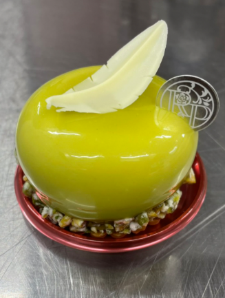
Petits Gâteaux
プティガトー
のついた写真をタップすると説明文が表示されます
Standard
定番の商品
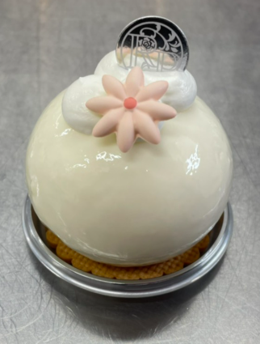
レアチーズ
Tarte aux Fromages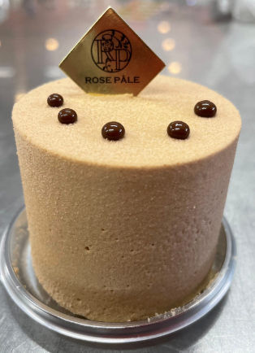
ラクテ スタッフおすすめ！
Lactée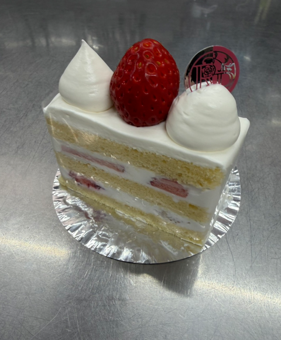
ガトーフレーズ
Gâteau aux Fraises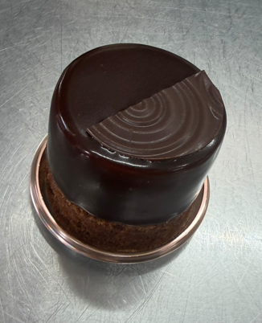
ショコラブラウニー
Chocolat Brownie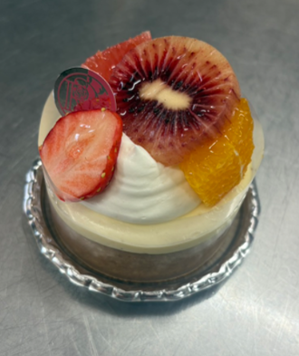
タルトフリュイ
Tarte aux Fruits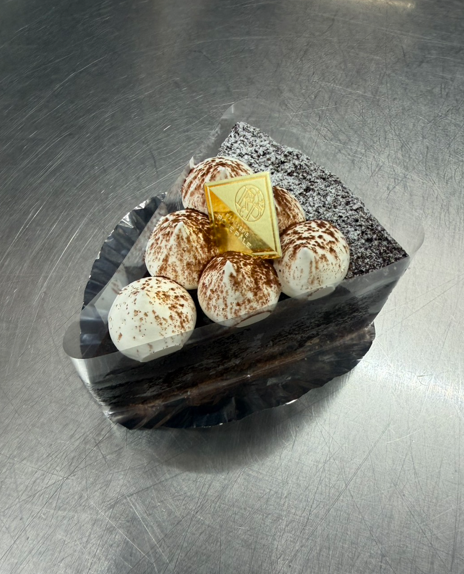
濃厚ガトーショコラ リニューアル！
Gâteau Chocolat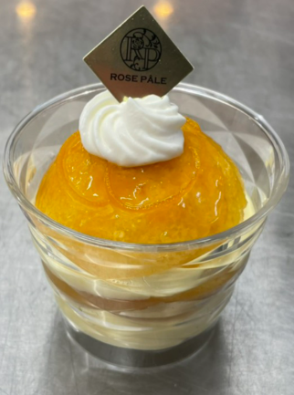
サバラン
Savarin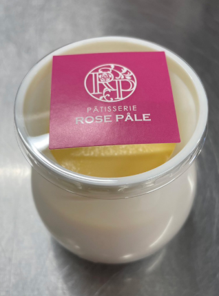
ローズパールプリン
Rose Pale Pudding
シューアラ クレーム
Chou à la Crème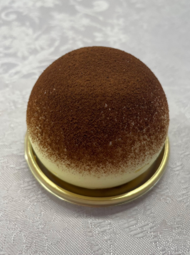
ティラミス
TiramisùSeasonal
季節限定の商品
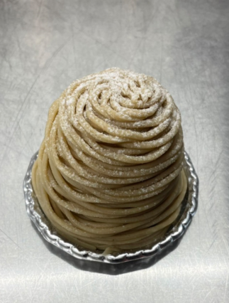
和栗のモンブラン
Mont-Blanc aux Marrons Japonais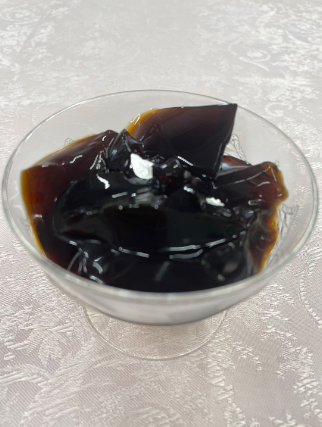
コーヒーパンナコッタ
Panna Cotta au Café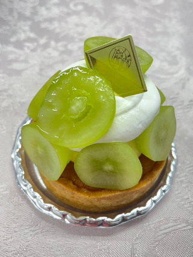
シャインマスカットタルト
Tarte aux Shine Muscat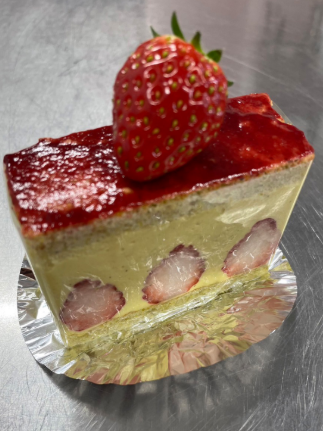
フレジェ
Fraisier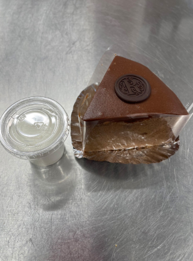
ザッハトルテ
Sachertorte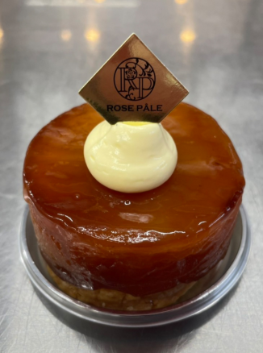
タルト・タタン
Tarte Tatin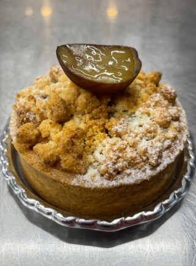
栗のクランブルタルト
Tarte aux Marrons et Crumble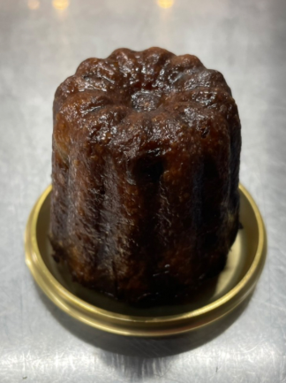
カヌレマロン
Cannelé aux Marrons※ 商品は季節によって変わります。詳細はお電話にてお問い合わせください。
04-7197-5966